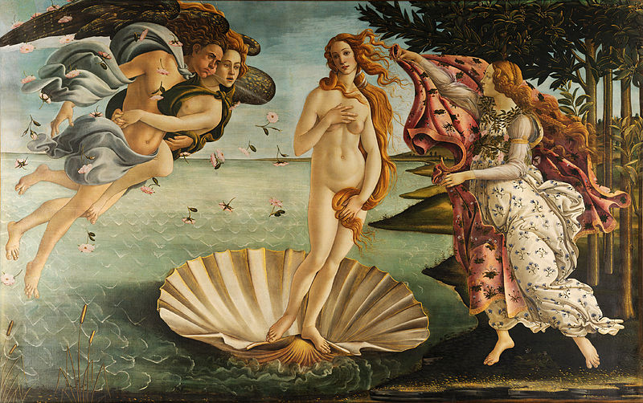

Afrodita(h1)
Afrodita es, en la mitología griega, la diosa del amor, la lujuria, la belleza, la sexualidad y la reproducción. Aunque a menudo se alude a ella en la cultura moderna como «la diosa del amor», es importante señalar que normalmente no era el amor en el sentido cristiano o romántico, sino específicamente Eros (atracción física o sexual). Su equivalente romana es la diosa Venus.
Equivalente (h2)
Afrodita tiene numerosas
- Inanna
- Astarté en la fenicia
- Turan en la etrusca
- Venus en la romana.
- xd
- xd2
Origenes (h3)
La ‘surgida de la espuma’ Afrodita nació del mar, cerca dePafos (Chipre) después de que Crono cortase durante la Titanomaquia los genitales a Urano con una hoz adamantina y los arrojase tras él al mar. En su Teogonía, Hesíodo cuenta que los genitales «fueron luego llevados por el piélago durante mucho tiempo.
Nacimiento(h4)

A su alrededor surgía del miembro inmortal una blanca espuma y en medio de ella nació una doncella» ya adulta. Este mito de Venus (el nombre romano de Afrodita) nacida adulta, Venus Anadiómena (‘Venus saliendo del mar’), fue una de las representaciones icónicas de Afrodita, famosa por la admiradísima pintura de Apeles, hoy perdida, pero descrita por Plinio el Viejo en su Naturalis Historia.

h5
Por esto, Afrodita es de una generación anterior a la de Zeus. Homero cuenta en el libro V de la Ilíada otra versión sobre su origen, según la cual sería hija de Dione, quien era la diosa oracular original («Dione» significa simplemente ‘diosa’, ‘diosa’, el genitivo de «Zeus») en Dódona.
aquih6
- Zeus
- Diso de los dioses